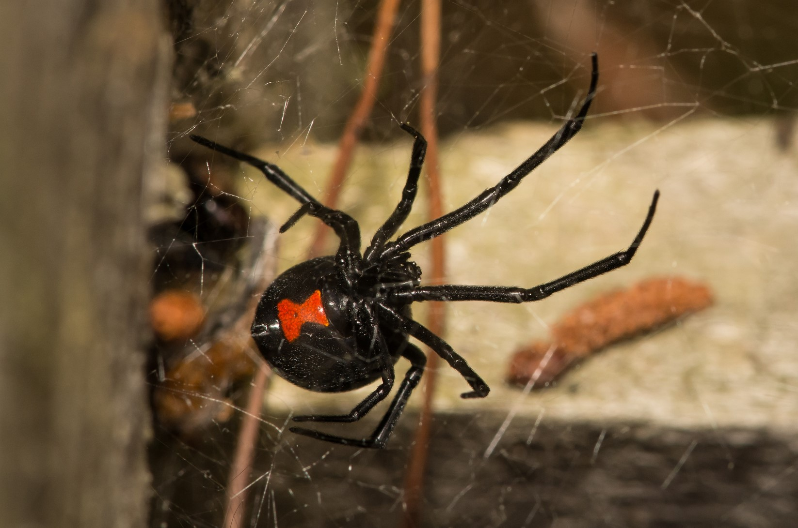

Sintomas da Aranha Viuva Negra (Latrodectus)
Seus sintomas podem levar a óbito
Humano
- Dor na região da picada
- Contrações nos músculos
- Suor generalizado
- Alterações na pressão
- Alterações batimentos cardíacos
Cão
- Dor muscular
- Diarreia e vômitos
- Salivação excessiva
- Inquietação
- Taquicardia (batimentos cardíacos acelerados)
- Convulsão
Gato
- Tremores
- Rigidez do abdômen
- Dificuldade respiratória
- Paralisia flácida
- Hiperexcitabilidade
- Vocalizações
- Hipersalivação
- Taquicardia